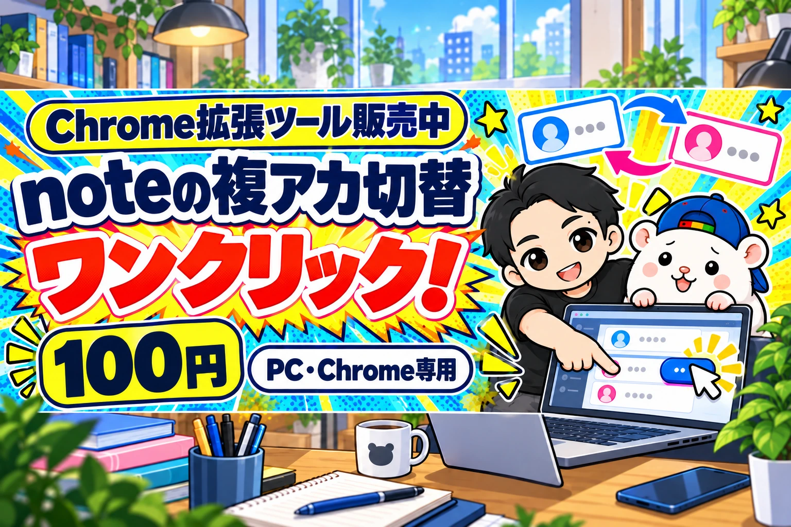
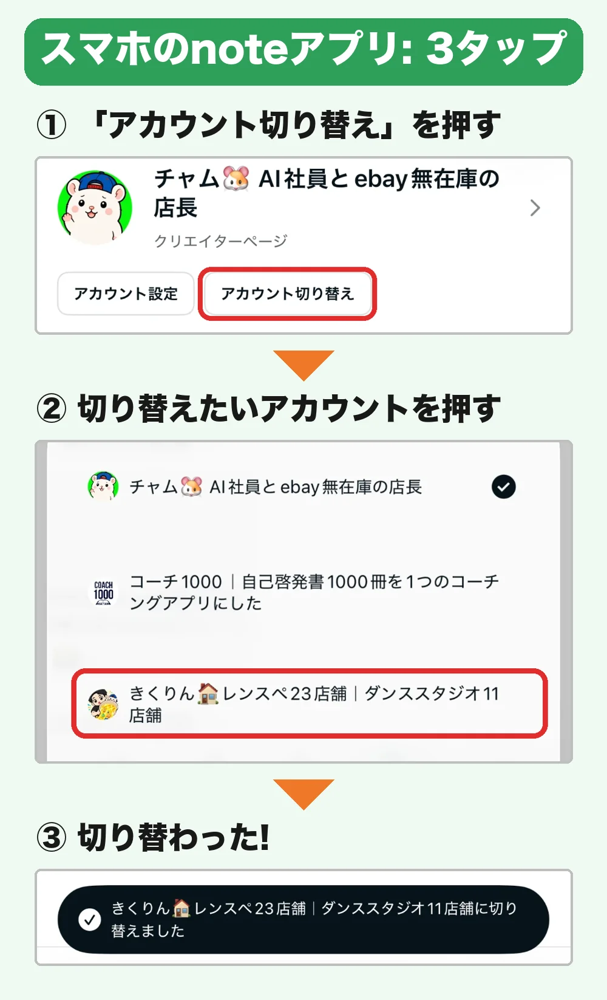
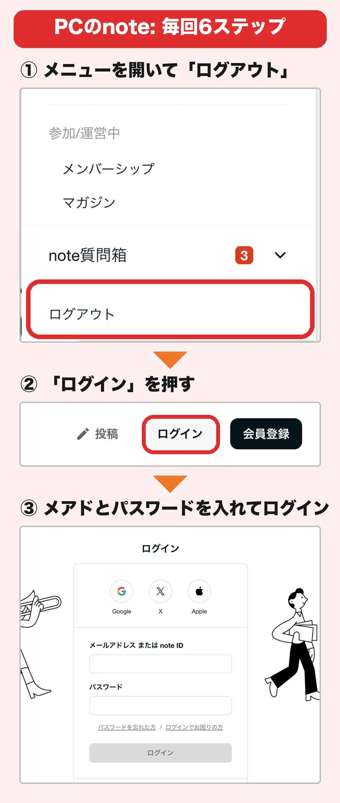
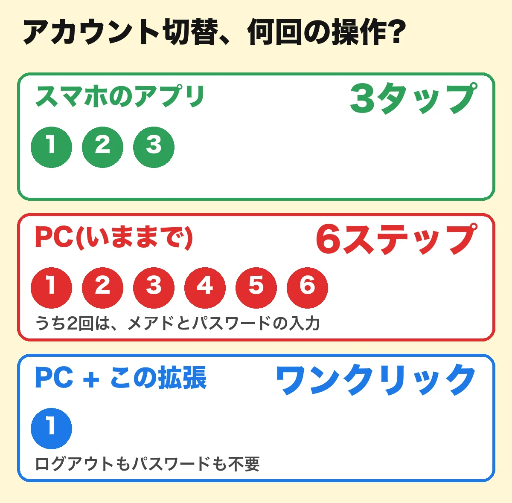
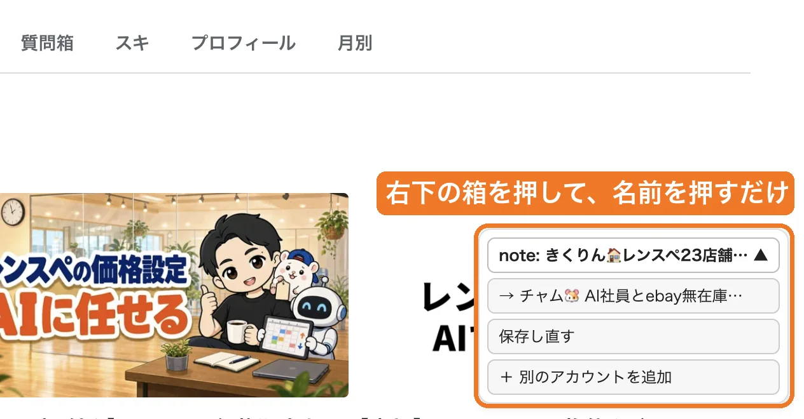
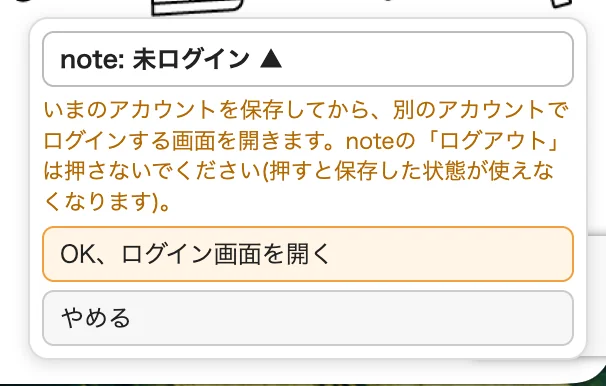

【PCのChromeで、noteを2つ以上のアカウントで使っている人専用】
スマホ・Safari・Firefoxでは使えません。
noteのアカウント切替。
スマホのアプリなら、3タップで終わります。

でもPCだと、こうです。
メニューを開いて、ログアウト。
ログインを押して、メールアドレスを入れて、パスワードを入れて、ログイン。

比べると、こうなります。

PCは6ステップ。
しかも、そのうち2回はメールアドレスとパスワードの入力です。
ぼくは、noteを2つのアカウントで運用しています。
レンタルスペースの「きくりん」と、eBayの「チャム」です。
記事を出すたびに、これをやっていました。
地味に、めんどうでした。
なので、AIに作ってもらいました。
PCでもワンクリックで切り替えるChrome拡張です。
できること
noteの画面の右下に、小さな箱が出ます。

箱には、保存したアカウントの一覧が出ています。
「→ アカウント名」を押すだけ。ワンクリックです。
ログアウトも、パスワードの入力も、いりません。
アカウントは3つでも、5つでも、10個でも。いくつでも保存できます。
使いかた3ステップ
- Chromeに入れる(最初の1回・3分)
- それぞれのアカウントで1回ずつ「このアカウントを保存」を押す
- あとは、右下の「→ アカウント名」を押すだけ
2つ目のアカウントは、右下の「＋ 別のアカウントを追加」から入れます。
noteのログアウトを使わずに、ログイン画面が開きます。

こんな人におすすめ
- noteを2つ以上のアカウントで運用している(3つ、4つ…いくつでもOK)
- PCで記事を書いて、投稿している
- 切り替えのたびに、メールアドレスとパスワードを入れている
買わないでほしい人
- PCのChromeを使っていない人(スマホ・Safari・Firefoxでは動きません)
- noteのアカウントが1つだけの人
- 家族や会社の人とPCを共用している人
よくある質問
Q. パスワードを保存するんですか?
A. しません。保存するのは「ログインしている状態」だけです。
Q. 保存したものは、どこにありますか?
A. あなたのPCのChromeの中だけです。どこにも送りません。
Q. ずっとログインしたままですか?
A. noteが決めた期限があります。目安は約3か月です。切り替えるたびに保存し直すので、ふだん使うアカウントは延びることが多いです。
Q. 切り替えに失敗したら?
A. 右下の「＋ 別のアカウントを追加」からログインし直して、「保存し直す」を押せば直ります。
(noteの「ログアウト」を押すと、保存した状態は使えなくなります。切り替えは、右下の箱だけで行ってください)
Q. noteの公式の機能ですか?
A. ちがいます。noteの仕様が変わると、動かなくなることがあります。
使うかどうかは、noteの利用規約を確認したうえで、ご自身の判断と責任でお願いします。
価格
100円です。
noteの記事で販売しています。
購入すると、ダウンロードのリンクと、入れかたの手順が読めます。
読んでくださって、ありがとうございました。